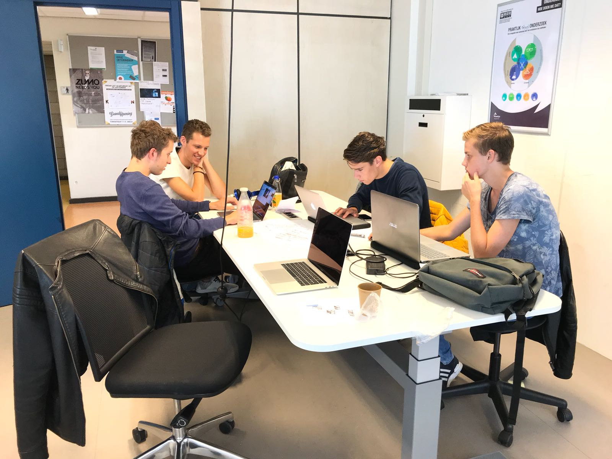

Wat ik heb geleerd
Theorie
In dit semester zijn we voor het eerst in aanraking gekomen met SCRUM-methode. Deze methode wordt steeds vaker en vaker gebruikt in het bedrijfsleven en houdt in dat je in een teamverband samenwerkt. Hierbij is het onderverdeeld in verschillende sprints, waarbij je bij elke sprint opnieuw producten opleverd zoals prototypes. Tijdens de watervalmethode zaten er duidelijk stappen van verzinnen, onderzoeken, maken, testen, maar dit is niet te vinden binnen scrum. Zo kan het zijn dat je al aan maken bent van producten zonder dat er onderzoek is gedaan of een daadwerkelijk concept is uitgekozen. Op dit manier krijg je veel meer gedaan en zal het product steeds meer de weken heen vorm krijgen. Grootste voordeel is dat opdrachtgever in duidelijke stappen kan zien wat de vooruitgang is in een project, waarbij er natuurlijk de nadruk wordt gelegd op feedback.
Scumboard
Product backlog
De product backlog bevat een samenvatting van alle dingen die in de toekomst gedaan moeten worden. Ook zijn hier userstories te vinden die gedurende door het hele project moeten worden afgerond.
Sprint Backlog
Dit is vergelijkbaar met de product backlog. In plaats dat hier wordt gesproken over het hele project zal hier de focus worden gelegd op de sprint waarin men bevindt. Deze moeten worden afgemaakt, voordat de sprint voorbij is. Hierbij is het dan ook logisch dat je deze producten presenteert voor de product owner.
Doing
Bij doing zijn producten, opdrachten of userstories te vinden waar momenteel aan gewerkt wordt. Hierbij is het wel de bedoeling dat deze binnen 2 a 3 dagen af zijn en wanneer dit langer duurt zou dit moeten worden opgesplitst in meerdere userstories.
Review
Producten zijn afgemaakt die bij doing stonden en worden naar review geplaatst. Voordat producten bruikbaar zijn is handig om hier feedback op te vragen bij groep of in dit geval bij de leraar. Wanneer er enkele puntjes zijn die niet goed waren zal product weer bij doing te vinden zijn. Is het product goed? Dan kan het bij done geplaatst worden en is het afgerond.
Done
Deelproduct is klaar en kan worden ingeleverd of worden afgerond om hierna weer verder te gaan.
Verschillende rollen
Product owner
Ook wel de opdrachtgever van een project, concept of opdracht. Voor ons is dit het bedrijf Perplex uit Arnhem.
Scrum master
Elke daily standup of scrum meeting wordt geleid en geopend door de scrummaster. Hij/zij is aangewezen om het proces duidelijk te laten verlopen, waarbij iedereen goed verteld wat men heeft gemaakt, dwars zit of andere punten die besproken moeten worden. Op deze manier zit er een duidelijk lijn in de scrum en zullen niet verschillende onderwerpen door elkaar besproken worden. Uiteindelijk is dit ook diegene waarmee gecommuniceerd word met de product owner.
Scrum team
Dit zijn de overige mensen van het team die werken aan producten van een project, concept of opdracht. Natuurlijk is het vanzelfsprekend dat deze elke keer aanwezig zijn bij scrummeeting om zo het proces te verbeteren.

Terugekomende vergaderingen
Daily standup
Dit is de dagelijkse vergadering van de groep, waarin duidelijk aangegeven wordt waarmee iedereen bezig is, wat zijn/haar plannen is en/of er problemen zijn binnen de groep. Ook wordt hier gezamelijk gekeken wie wat het beste op zich kan nemen om zo tot beste resultaat te komen. Door dit overzichtelijk bij te houden en te loggen creer je een duidelijk proces van keuzes en kan je van dag tot dag zien wat wanneer gebeurd is.
Retrospective
In plaats van een dagelijkse vergadering is dit een speciale vergadering in teken van sprint. Wat is hierbij goed gegaan en waar liggen de sterke punten binnen de scrum in deze sprint? Hierbij kan je vervolgens leren in de volgende sprint en wanneer het hier weer verkeerd gaat kan er voor een andere aanpak gekozen worden. Natuurlijk moet je ook terugkijken op de verkeerde punten binnen de scrum van een sprint om hier juist sterker van te worden. Uiteindelijk is dit een goed punt om grote veranderingen door te voeren van de manier van scrummen.

Uitgebreid onderzoek gedaan naar werking van SCRUM-methode en uitgelegd

Niet echt gekeken naar hoe andere bedrijven SCRUM-methode gebruiken

Kennis en toepassing van Scrum in de proftaak